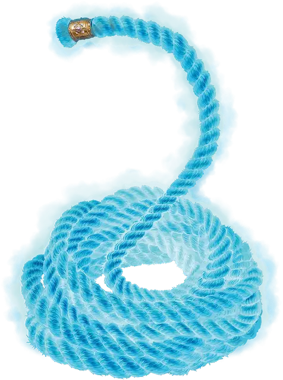

Верёвка опутывания
Rope of Entanglement
Чудесный предмет, редкий

Рекомендованная стоимость 4 000 ЗМ
Длина этой верёвки составляет 30 футов. Удерживая один конец верёвки, вы можете действием Магия приказать другому концу броситься вперёд и оплести одно существо, которое вы видите в пределах 20 футов от вас. Цель должна преуспеть в спасброске Ловкости Сл 15, иначе получит состояние Опутанный. Вы можете освободить цель, отпустив свой конец верёвки (в этом случае верёвка свернётся кольцом в пространстве цели) или Бонусным действием повторив команду (в таком случае верёвка свернётся кольцом у вас в руке).
Опутанная верёвкой цель может действием совершить на свой выбор проверку Силы (Атлетика) Сл 15 или Ловкости (Акробатика) Сл 15, в случае успеха теряя состояние Опутанный. Если вы всё ещё держите верёвку, когда цель освобождается от неё, вы можете Реакцией приказать верёвке свернуться кольцом у вас в руке; в противном случае верёвка свернётся кольцом в пространстве цели.
Класс Защиты верёвки равен 20, у неё 20 Хитов и Иммунитет к Психическому урону и урону Ядом. Она восстанавливает 1 Хит каждые 5 минут, пока у неё есть хотя бы 1 Хит. Если Хиты верёвки опустятся до 0, она будет уничтожена.